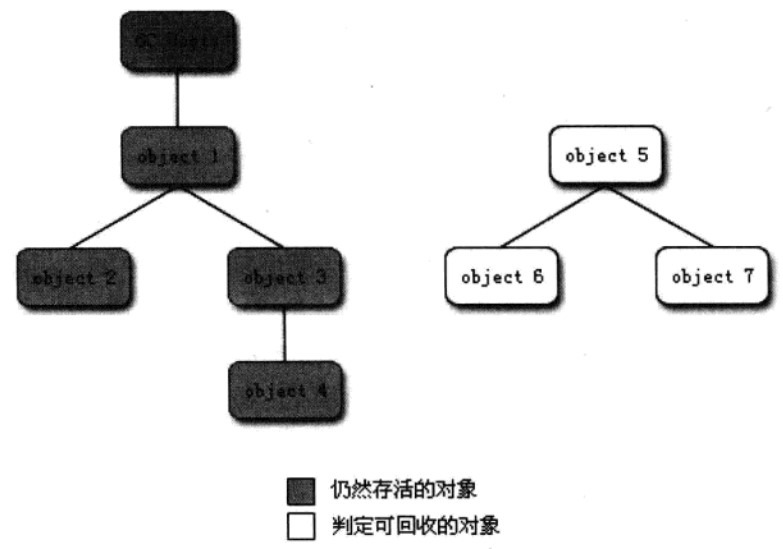
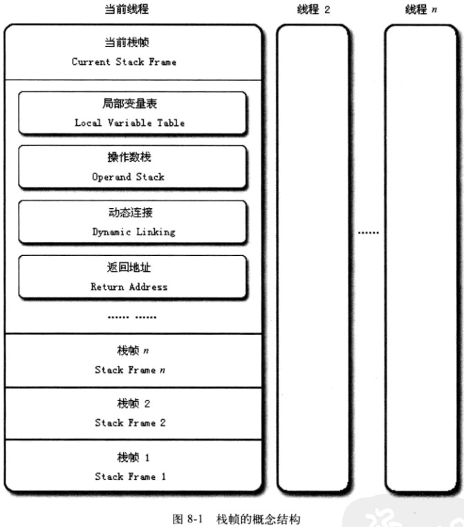

运行时数据区域包括哪些？
- 程序计数器
- Java 虚拟机栈
- 本地方法栈
- Java 堆
- 方法区
- 运行时常量池
- 直接内存
程序计数器（线程私有）
程序计数器（Program Counter Register）是一块较小的内存空间，可以看作是当前线程所执行字节码的行号指示器。分支、循环、跳转、异常处理、线程恢复等基础功能都需要依赖这个计数器完成。
由于 Java 虚拟机的多线程是通过线程轮流切换并分配处理器执行时间的方式实现的。为了线程切换后能恢复到正确的执行位置，每条线程都需要一个独立的程序计数器，各线程之间的计数器互不影响，独立存储。
- 如果线程正在执行的是一个 Java 方法，计数器记录的是正在执行的虚拟机字节码指令的地址；
- 如果正在执行的是 Native 方法，这个计数器的值为空。
程序计数器是唯一一个没有规定任何 OutOfMemoryError 的区域。
Java 虚拟机栈（线程私有）
Java 虚拟机栈（Java Virtual Machine Stacks）是线程私有的，生命周期与线程相同。
虚拟机栈描述的是 Java 方法执行的内存模型：每个方法被执行的时候都会创建一个栈帧（Stack Frame），存储
- 局部变量表
- 操作栈
- 动态链接
- 方法出口
每一个方法被调用到执行完成的过程，就对应着一个栈帧在虚拟机栈中从入栈到出栈的过程。
这个区域有两种异常情况：
- StackOverflowError：线程请求的栈深度大于虚拟机所允许的深度
- OutOfMemoryError：虚拟机栈扩展到无法申请足够的内存时
本地方法栈（线程私有）
虚拟机栈为虚拟机执行 Java 方法（字节码）服务。
本地方法栈（Native Method Stacks）为虚拟机使用到的 Native 方法服务。
Java 堆（线程共享）
Java 堆（Java Heap）是 Java 虚拟机中内存最大的一块。Java 堆在虚拟机启动时创建，被所有线程共享。
作用：存放对象实例。垃圾收集器主要管理的就是 Java 堆。Java 堆在物理上可以不连续，只要逻辑上连续即可。
方法区（线程共享）
方法区（Method Area）被所有线程共享，用于存储已被虚拟机加载的类信息、常量、静态变量、即时编译器编译后的代码等数据。
和 Java 堆一样，不需要连续的内存，可以选择固定的大小，更可以选择不实现垃圾收集。
运行时常量池
运行时常量池（Runtime Constant Pool）是方法区的一部分。保存 Class 文件中的符号引用、翻译出来的直接引用。运行时常量池可以在运行期间将新的常量放入池中。
Java 中对象访问是如何进行的？
1 | Object obj = new Object(); |
对于上述最简单的访问，也会涉及到 Java 栈、Java 堆、方法区这三个最重要内存区域。
1 | Object obj |
如果出现在方法体中，则上述代码会反映到 Java 栈的本地变量表中，作为 reference 类型数据出现。
1 | new Object() |
反映到 Java 堆中，形成一块存储了 Object 类型所有对象实例数据值的内存。Java堆中还包含对象类型数据的地址信息，这些类型数据存储在方法区中。
如何判断对象是否“死去”？
- 引用计数法
- 根搜索算法
什么是引用计数法？
给对象添加一个引用计数器，每当有一个地方引用它，计数器就+1,；当引用失效时，计数器就-1；任何时刻计数器都为0的对象就是不能再被使用的。
引用计数法的缺点？
很难解决对象之间的循环引用问题。
什么是根搜索算法？
通过一系列的名为“GC Roots”的对象作为起始点，从这些节点开始向下搜索，搜索所走过的路径称为引用链（Reference Chain），当一个对象到 GC Roots 没有任何引用链相连（用图论的话来说就是从 GC Roots 到这个对象不可达）时，则证明此对象是不可用的。

Java 的4种引用方式？
在 JDK 1.2 之后，Java 对引用的概念进行了扩充，将引用分为
- 强引用 Strong Reference
- 软引用 Soft Reference
- 弱引用 Weak Reference
- 虚引用 Phantom Reference
强引用
1 | Object obj = new Object(); |
代码中普遍存在的，像上述的引用。只要强引用还在，垃圾收集器永远不会回收掉被引用的对象。
软引用
用来描述一些还有用，但并非必须的对象。软引用所关联的对象，有在系统将要发生内存溢出异常之前，将会把这些对象列进回收范围，并进行第二次回收。如果这次回收还是没有足够的内存，才会抛出内存异常。提供了 SoftReference 类实现软引用。
1 | SoftReference ref = new SoftReference(new MyDate()); |
弱引用
描述非必须的对象，强度比软引用更弱一些，被弱引用关联的对象，只能生存到下一次垃圾收集发生前。当垃圾收集器工作时，无论当前内存是否足够，都会回收掉只被弱引用关联的对象。提供了 WeakReference 类来实现弱引用。
1 | WeakReference ref = new WeakReference(new MyDate()); |
虚引用
一个对象是否有虚引用，完全不会对其生存时间够成影响，也无法通过虚引用来取得一个对象实例。为一个对象关联虚引用的唯一目的，就是希望在这个对象被收集器回收时，收到一个系统通知。提供了 PhantomReference 类来实现虚引用。
可以用以下表格总结上面的内容：
| 级别 | 什么时候被垃圾回收 | 用途 | 生存时间 |
|---|---|---|---|
| 强引用 | 从来不会 | 对象的一般状态 | JVM停止运行时终止 |
| 软引用 | 在内存不足时 | 对象简单？缓存 | 内存不足时终止 |
| 弱引用 | 在垃圾回收时 | 对象缓存 | gc运行后终止 |
| 虚引用 | Unknown | Unknown | Unknown |
Java 内存
为什么要将堆内存分区？
对于一个大型的系统，当创建的对象及方法变量比较多时，即堆内存中的对象比较多，如果逐一分析对象是否该回收，效率很低。分区是为了进行模块化管理，管理不同的对象及变量，以提高 JVM 的执行效率。
堆内存分为哪几块？
- Young Generation Space 新生区（也称新生代）
- Tenure Generation Space养老区（也称旧生代）
- Permanent Space 永久存储区
分代收集算法
内存分配有哪些原则？
- 对象优先分配在 Eden
- 大对象直接进入老年代
- 长期存活的对象将进入老年代
- 动态对象年龄判定
- 空间分配担保
Young Generation Space （采用复制算法）
主要用来存储新创建的对象，内存较小，垃圾回收频繁。这个区又分为三个区域：一个 Eden Space 和两个 Survivor Space。
- 当对象在堆创建时，将进入年轻代的Eden Space。
- 垃圾回收器进行垃圾回收时，扫描Eden Space和A Suvivor Space，如果对象仍然存活，则复制到B Suvivor Space，如果B Suvivor Space已经满，则复制 Old Gen
- 扫描A Suvivor Space时，如果对象已经经过了几次的扫描仍然存活，JVM认为其为一个Old对象，则将其移到Old Gen。
- 扫描完毕后，JVM将Eden Space和A Suvivor Space清空，然后交换A和B的角色（即下次垃圾回收时会扫描Eden Space和B Suvivor Space。
Tenure Generation Space（采用标记-整理算法）
主要用来存储长时间被引用的对象。它里面存放的是经过几次在 Young Generation Space 进行扫描判断过仍存活的对象，内存较大，垃圾回收频率较小。
Permanent Space
存储不变的类定义、字节码和常量等。
运行时栈帧结构
栈帧是用于支持虚拟机进行方法调用和方法执行的数据结构， 存储了方法的
- 局部变量表
- 操作数栈
- 动态连接
- 方法返回地址
每一个方法从调用开始到执行完成的过程，就对应着一个栈帧在虚拟机栈里面从入栈到出栈的过程。

Java 方法调用
什么是方法调用？
方法调用唯一的任务是确定被调用方法的版本（调用哪个方法），暂时还不涉及方法内部的具体运行过程。
Java的方法调用，有什么特殊之处？
Class文件的编译过程不包含传统编译的连接步骤，一切方法调用在Class文件里面存储的都只是符号引用，而不是方法在实际运行时内存布局中的入口地址。这使得Java有强大的动态扩展能力，但使Java方法的调用过程变得相对复杂，需要在类加载期间甚至到运行时才能确定目标方法的直接引用。
Java虚拟机调用字节码指令有哪些？
- invokestatic：调用静态方法
- invokespecial：调用实例构造器方法、私有方法和父类方法
- invokevirtual：调用所有的虚方法
- invokeinterface：调用接口方法
基于栈的指令集和基于寄存器的指令集
什么是基于栈的指令集？
Java编译器输出的指令流，里面的指令大部分都是零地址指令，它们依赖操作数栈进行工作。
计算“1+1=2”，基于栈的指令集是这样的：
1 | iconst_1 |
两条iconst_1指令连续地把两个常量1压入栈中，iadd指令把栈顶的两个值出栈相加，把结果放回栈顶，最后istore_0把栈顶的值放到局部变量表的第0个Slot中。
什么是基于寄存器的指令集？
最典型的是x86的地址指令集，依赖寄存器工作。
计算“1+1=2”，基于寄存器的指令集是这样的：
1 | mov eax, 1 |
mov指令把EAX寄存器的值设为1，然后add指令再把这个值加1，结果就保存在EAX寄存器里。
基于栈的指令集的优缺点？
优点：
- 可移植性好：用户程序不会直接用到这些寄存器，由虚拟机自行决定把一些访问最频繁的数据（程序计数器、栈顶缓存）放到寄存器以获取更好的性能。
- 代码相对紧凑：字节码中每个字节就对应一条指令
- 编译器实现简单：不需要考虑空间分配问题，所需空间都在栈上操作
缺点：
- 执行速度稍慢
- 完成相同功能所需的指令熟练多
频繁的访问栈，意味着频繁的访问内存，相对于处理器，内存才是执行速度的瓶颈。
Javac编译过程分为哪些步骤？
- 解析与填充符号表
- 插入式注解处理器的注解处理
- 分析与字节码生成
什么是即时编译器？
Java程序最初是通过解释器进行解释执行的，当虚拟机发现某个方法或代码块的运行特别频繁，就会把这些代码认定为“热点代码”（Hot Spot Code）。
为了提高热点代码的执行效率，在运行时，虚拟机将会把这些代码编译成与本地平台相关的机器码，并进行各种层次的优化，完成这个任务的编译器成为即时编译器（Just In Time Compiler，JIT编译器）。